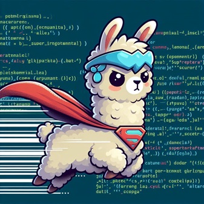
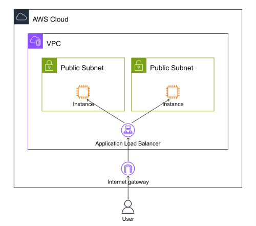

- The main advantages of as code are:
- The main challenges of as code are:
- Is it justified?
- Status of as code in each domain
- Diagram as Code Resources
- Conclusion

💡 What is Everything as Code?
Everything as code is a paradigm that treats any aspect of software development, delivery, or operation as a code artifact that can be versioned, tested, and deployed using the same tools and processes as the application code.
In the era of cloud computing, automation, and DevSecOps, the concept of “everything as code” or simply “as code” has become increasingly popular and relevant. But what does it mean, and what are the benefits and challenges of adopting it?
🧬 Did You Know?
Life as code is genome. Just as DNA encodes the instructions for building and operating living organisms, "as code" encodes the instructions for building and operating software systems. Both are versioned (through evolution or version control), tested (through natural selection or automated testing), and deployed (through reproduction or continuous deployment).
As code encompasses various domains, such as:
- Infrastructure as code (IaC): The practice of defining and managing cloud resources, such as servers, networks, and storage, using configuration files or scripts. Terraform is the best representation of Infrastructure as code.
- Policy as code: The practice of expressing and enforcing security, compliance, or governance rules as code that can be integrated into the development and deployment pipelines.
- Architecture as code: The practice of defining and documenting software architecture decisions, patterns, and structures using code-based formats that can be versioned and validated. Tools like Structurizr and C4 model enable architects to describe system architecture programmatically, ensuring architecture documentation stays synchronized with implementation.
- Diagram as code: The practice of creating and updating diagrams, such as architecture diagrams or flowcharts, using code that can be rendered into graphical formats.
- Presentation as code: The practice of creating and updating presentations, such as slides or reports, using code that can be converted into different formats or platforms. slidev is one of the tools, but HTML/CSS/JS and VBA can be less human-readable alternatives.
- Database as code: The practice of defining and managing database schemas, data, and migrations using code that can be executed by database engines or tools.
- Documentation as code: The practice of writing and maintaining documentation using plain text formats, such as Markdown or AsciiDoc, that can be processed by documentation generators or integrated into code repositories. There are countless frameworks to generate human-readable documents from programmer-friendly code.
- Configuration Management as code: The practice of defining and managing application settings, such as environment variables or feature flags, using code that can be applied dynamically or statically.
- UI as code: The practice of creating and updating user interfaces, such as web pages or mobile apps, using code that can be rendered into different devices or platforms. UI is usually stored with XML and HTML, but it is not uncommon to generate from programming languages.
- AI as code: The practice of creating and updating artificial intelligence models, such as machine learning or deep learning models, using code that can be trained and deployed using AI frameworks or platforms. Meanwhile, models can be “layered” with inferring. Ollama has Dockerfile-like as code that can be used for that purpose besides system prompts.
The main advantages of as code are:
- Consistency: As code ensures that all aspects of software development, delivery, or operation are consistent with each other and with the application code. This reduces errors, conflicts, and discrepancies that may arise from manual or ad hoc interventions.
- Reusability: As code enables the reuse of code artifacts across different projects, environments, or teams. This increases efficiency, productivity, and collaboration among developers and operators.
- Traceability: As code provides a clear and complete history of changes made to any aspect of software development, delivery, or operation. This facilitates auditing, debugging, and troubleshooting issues that may occur during the software lifecycle.
- Scalability: As code allows for the easy and rapid scaling of cloud resources, workflows, or models to meet changing demands or requirements. This improves performance, availability, and resilience of software systems.
- Automation: As code enables the automation of tasks that are otherwise tedious, time-consuming, or error-prone. This frees up developers and operators to focus on more creative or strategic activities.
- AI-Friendly: As code provides structured, machine-readable formats that AI systems can easily parse, understand, and generate. This enables AI assistants to help create, modify, and optimize infrastructure, documentation, configurations, and other artifacts, accelerating development workflows and reducing human error.
The main challenges of as code are:
- Complexity: As code introduces additional layers of abstraction and complexity to software development, delivery, or operation. This requires developers and operators to learn new skills, tools, and languages to deal with different domains of as code.
- Integration: As code requires the integration of various tools and platforms to support different domains of as code. This may pose compatibility issues, security risks, or maintenance overheads for developers and operators.
- Testing: Most as code demands rigorous testing of code artifacts to ensure their correctness, reliability, and quality. This may require additional resources, time, or expertise for developers and operators.
Is it justified?
Is it justified to use as code for each use case? The answer depends on several factors, such as:
- The nature and scope of the project: Some projects may benefit more from as code than others, depending on their size, complexity, or domain. For example, a large-scale, distributed, or data-intensive project may benefit more from IaC, WaC, or AIC than a small-scale, monolithic, or logic-intensive project.
- The maturity and availability of the tools and platforms: Some tools and platforms may support as code better than others, depending on their features, functionality, or compatibility. For example, some cloud providers may offer more options and flexibility for IaC than others, or some AI frameworks may offer more capabilities and performance for AIC than others.
- The skills and preferences of the developers and operators: Some developers and operators may prefer as code over others, depending on their skills, experience, or style. For example, some developers may enjoy writing code more than using graphical interfaces, or some operators may prefer using code more than using dashboards.
Status of as code in each domain
📊 As Code Maturity Assessment
Based on current industry adoption and tooling maturity:
| as code | status | justified (5 star max) |
|---|---|---|
| Infrastructure | Very mature and widely used | ⭐⭐⭐⭐⭐ |
| Policy | Mature but not being widely used | ⭐⭐⭐ |
| Architecture | Growing adoption with tools like Structurizr and C4 | ⭐⭐⭐⭐ |
| Diagram | Depends on diagram type. Some are difficult to adjust layout | ⭐⭐⭐ |
| Presentation | Difficult to fine-tune layout and create animations | ⭐ |
| Database | ⭐⭐⭐⭐⭐ | |
| Documentation | Markdown and many more | ⭐⭐⭐⭐ |
| Configuration | ⭐⭐⭐ | |
| UI | Can be generated with programming language | ⭐⭐⭐⭐ |
| AI | Model can be layered | ⭐⭐ |
Diagram as Code Resources
Mermaid JS
The best way to represent diagrams as code in YAML language is through MermaidJS, a JavaScript library that can generate diagrams on the fly. GitHub and many platforms support MermaidJS natively. Other platforms like Hexo, which generates this blog, also have plugins to render diagrams with MermaidJS. The error messages are very intuitive compared to other diagram as code libraries. Highly recommended for writing simple diagrams.
PlantUML
https://github.com/plantuml/plantuml
A well-known diagram as code generator produces images from human-readable language. It generates images at a tolerable speed, even when processing Java programs. This tool supports multiple-page diagrams. However, mastering positioning can be challenging even though it supports various layout types. Lines may run over labels and other issues may arise as your diagrams become more complex.
AWS Diagram-as-Code
https://github.com/awslabs/diagram-as-code
The project began in February 2024, which is relatively fresh. The diagram looks nice with icons and grouping:

Although it uses YAML, writing diagrams with its structure can be punishing once you start to set links between resources. You need to write at least four lines to describe them effectively, such as Source, Target, SourcePosition, and TargetPosition:
links.yamlLinks: - Source: ALB SourcePosition: NNW Target: VPCPublicSubnet1Instance TargetPosition: SSE TargetArrowHead: Type: Open
SourcePosition and TargetPosition are required because the line does not automatically position itself with respect to the resource. Although the diagram looks nice, it does not support AWS styling like callouts. Not recommended unless you want a quick diagram from infrastructure as code in CloudFormation, or converting from Terraform. However, you still need a lot of work to finalize a diagram.
Conclusion
In conclusion, as code is a powerful and promising paradigm that can enhance software development, delivery, or operation. However, it also comes with its own challenges and trade-offs that need to be considered carefully before adopting it.
🎯 Key Takeaway
As code is not a one-size-fits-all solution, but rather a context-dependent choice that depends on the project, the tools, and the people involved.